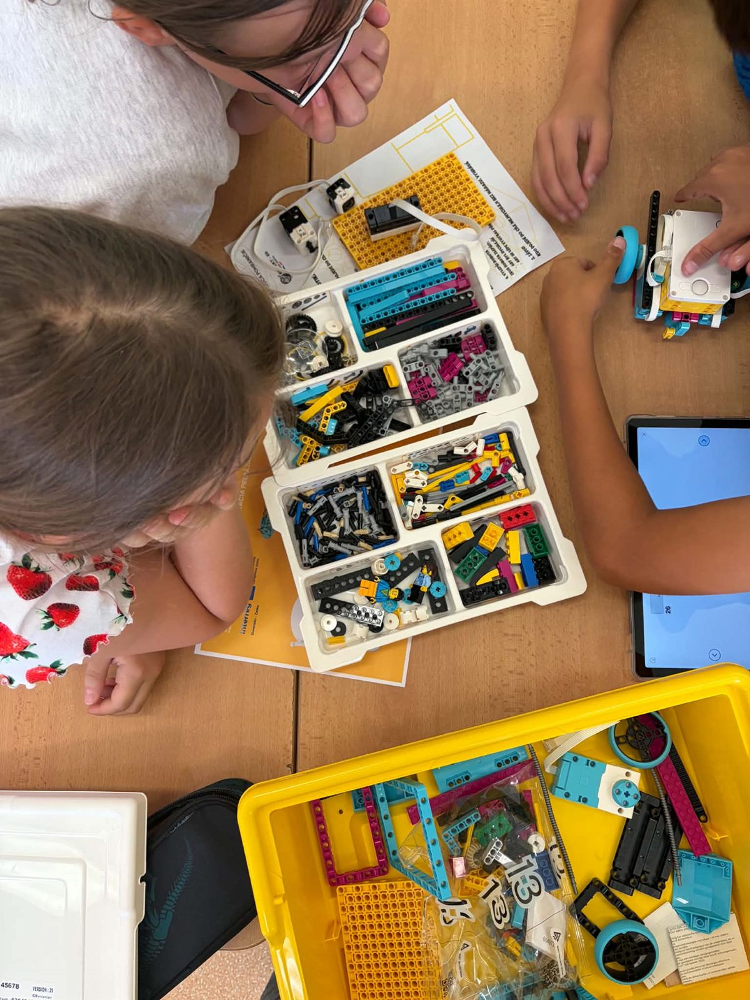

Mobilná učebňa KONEKT-ED:
Edukácia prepájajúca pohraničie
Spoločný projekt Sdružení měst a obcí Východní Moravy a Trnavského umenovedného centra, podporený z programu Interreg Slovensko – Česko 2021–2027.
Rovný prístup ku kvalitnému vzdelávaniu
Cieľom projektu je zlepšiť rovný prístup k inkluzívnym a kvalitným službám v oblasti vzdelávania, odbornej prípravy a celoživotného vzdelávania rozvíjaním dostupnej infraštruktúry vrátane posilňovania odolnosti pre dištančné a online vzdelávanie a odbornú prípravu.
Hlavným cieľom je sprístupniť inovatívne formy vzdelávania v pohraničných regiónoch Českej republiky a Slovenskej republiky. Vznikla mobilná učebňa vybavená modernými technológiami a nástrojmi pre interaktívnu výučbu so zameraním na prenos vedomostí do praxe.

Na čo projekt odpovedá
Menšie školy bez vybavenia
Menšie školy s obmedzeným rozpočtom často nemajú priestor ani techniku na výučbu robotiky, programovania či virtuálnej reality. Projekt sa zameriava práve na ne.
Učebňa v pohybe
Vybavená učebňa sa presúvala medzi školami v pohraničí. Workshopy viedli lektori s technickou podporou z oboch krajín.
Spolupráca cez hranicu
Pedagógovia z českých a slovenských škôl spoločne definovali vzdelávacie okruhy, ktoré zodpovedajú osnovám a potrebám škôl na oboch stranách hranice.
Tri fázy realizácie
Od nápadu ku škole
Definície a spolupráca
Tím pedagógov zo ZŠ a SŠ v pohraničí definoval 12 vzdelávacích okruhov podľa učebných osnov a potrieb škôl.
Obsahové balíky
Odborníci pripravili 12 obsahových balíkov: priebeh výučby, úlohy pre žiakov, didaktické pomôcky a aplikácie na mieru.
Učebňa na cestách
Mobilná učebňa navštívila školy v pohraničí aj letné akcie. Školy si vyberali workshopy podľa svojho zamerania.
S čím žiaci pracujú
Učebňa je vybavená technikou, ktorú si žiaci sami vyskúšali. Každý workshop stavia na jednej hlavnej technológii.
LEGO® SPIKE™ Prime
Robotické stavebnice na zostavenie a programovanie robota. Fyzikálne javy prevedené na dáta.
Chytrá robotika →Sphero BOLT
Programovateľné guľové roboty so senzormi a LED maticou pre hravý úvod do algoritmizácie.
Robotika →Tinkercad
Online prostredie na 3D modelovanie. Žiaci navrhujú domy aj technológie pre život na Marse.
Kreatívny inžinier →Seek by iNaturalist
Aplikácia na určovanie rastlín a živočíchov. Bádateľská práca priamo v teréne.
Digitálny bádateľ →Rozšírená realita
Interaktívne 3D modely ľudského tela, orgánov a orgánových sústav priamo v triede.
Digitálna anatómia →Virtuálne laboratórium
PhET simulácie fyzikálnych a chemických javov: experimentovanie bez laboratória.
Virtuálne laboratórium →Kto projekt realizuje

Sdružení měst a obcí Východní Moravy
Zabezpečovalo priamu komunikáciu so školami na českej strane, realizáciu workshopov v českých školách a podujatia prepájajúce odborníkov z praxe so školami.
Třída Tomáše Bati 5146, 760 01 Zlín

Trnavské umenovedné centrum
Zodpovedalo za vybavenie mobilnej učebne, jej správu a údržbu a za digitálne produkty na mieru pre obsahové balíky.
Hospodárska 3616/64, 917 01 Trnava
Podporené z programu Interreg Slovensko – Česko
Projekt je podporený z programu Interreg Slovensko – Česko 2021–2027, priorita 2.1 Vzdelávanie. Viac o programe na www.sk-cz.eu.

- Názov projektu
- Mobilná učebňa Konekt-ED: Edukácia prepájajúca pohraničie
- Kód projektu
- 403401DXX8
- Program
- Interreg Slovensko – Česko 2021–2027
- Obdobie realizácie
- 1. 7. 2024 – 1. 6. 2026
- Partneri
- Sdružení měst a obcí Východní Moravy (CZ), Trnavské umenovedné centrum (SK)
Čo projekt prináša
- Mobilná učebňa vybavená tabletmi, robotickými stavebnicami LEGO® SPIKE™ Prime, robotmi Sphero BOLT, 3D tlačiarňou a ďalšími pomôckami
- 12 vzdelávacích okruhov a 12 obsahových balíkov pre ZŠ a SŠ
- Aplikácie na mieru pre virtuálnu realitu a tablety
- Metodiky a pracovné listy pre učiteľov (sprístupníme v pripravovanom e-learningu)
- Workshopy v školách v česko-slovenskom pohraničí a letné akcie pre verejnosť
- Trvalá spolupráca dvoch organizácií cez hranicu aj po skončení projektu
Výsledky projektu pre vašu výučbu
Programy, ktoré v projekte vznikli, môžete využiť aj vo svojej triede. Pozrite sa, čo sa v nich žiaci naučia a aké materiály k nim existujú.